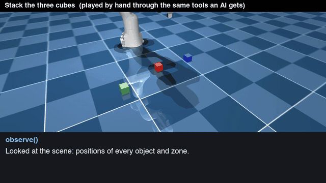
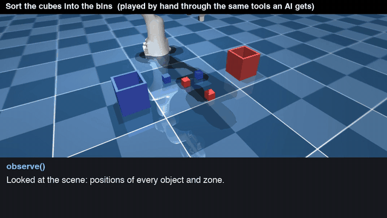
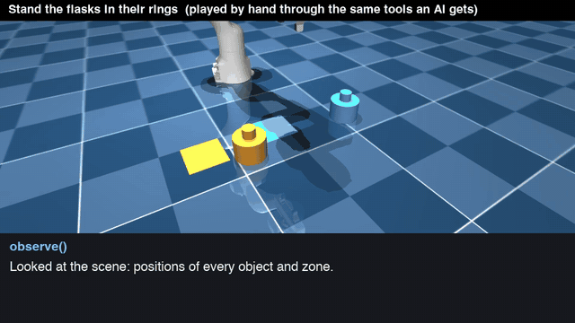
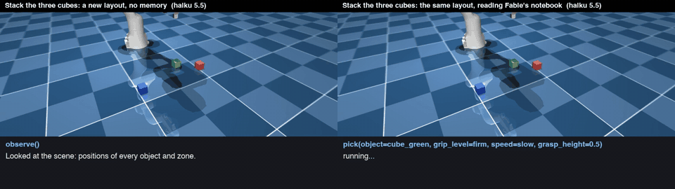

robot-play · Research report · 17 November 2026
Can a language model learn a robot job by keeping notes?
An experiment with a simulated robot arm, five language models and a 300-word notebook.
Code, plan and raw data: github.com/TarunTomar122/robot-play. Every number here is taken from results/RESULTS.md, and that file is the reference if the two ever disagree.
Abstract
A language model that directs a robot starts every job cold. I wanted to know whether letting it keep a short notebook between attempts would change that, with no retraining at all. In a simulator, models drove a Franka Panda arm through eight tools on jobs that each hide one physical catch. They practised twelve times and were then tested on layouts they had not seen. The notebook helped: Claude Haiku 5.5 went from solving 76% of test episodes to 99% and GPT-6 Luna from 91% to 100%, and both got there in about a third fewer tool calls. When I looked for what the notebook was contributing, though, most of it turned out to be small. For Haiku, two sentences naming the settings it was allowed to change did almost as well. And on a fourth job, built so that no fixed setting works, the models coped only while the simulator told them what had gone wrong. With that error message removed, twelve practice episodes produced notebooks that mentioned the damage and missed its cause.
Introduction
A new worker in a workshop does not know, on the first day, that one of the drills sticks or that the top shelf is out of reach from the short ladder. A week later they know both. Nobody retrained them. They tried things, got some of them wrong, and remembered.
I wanted to see whether a language model can pick up a job the same way. In this setup the model does the deciding and ordinary robotics code does the moving: the model calls a tool such as pick or place, and inverse kinematics and a motion planner take care of the joints. The model's weights are never touched. What it gets is a notebook of at most 300 words, which it rewrites after every practice attempt and is handed back at the start of the next.
Here is the kind of thing it has to learn. In the job below the arm has to build a tower of three cubes, and the green one is five times heavier than the other two. Nothing in the scene description says so. With the default grip the fingers close, the cube stays on the table, and the tool reports that the object rose by zero centimetres. Squeeze harder and it works. Figure 1 is me doing exactly that by hand, with only the tools and the numbers a model would see.

stack job played by hand through the same tools the models use. The first pick fails, the second uses a firm grip, and the tower gets built. The text under the picture is what each tool call returned.A model with no memory has to make that discovery again in every episode. A model with a notebook could make it once. The experiment measures how much that is worth. Each model practises a job twelve times, then plays four layouts it has never seen with its notebook frozen, and I compare the result with the same model playing the same layouts cold.
It is worth a lot where there is something to learn, and Section 3 has the numbers. Two things surprised me after that. Very little of the notebook was needed to get the same effect (Section 4). And the benefit depended almost entirely on the simulator explaining its failures, which I only found out by building a job where it stops doing so (Section 5).
A note on two labels. The main comparison and its analysis were planned and pushed to GitHub before any model ran, and I call those results registered. Everything I added later is exploratory. I wrote each of those experiments down before running it as well, usually with a prediction, but by then I had seen earlier results, and their intervals are not corrected for the number of things I tried. Words with a dotted underline open a definition.
Method
The robot and its tools
The arm is a simulated Franka Panda, and the model reaches it only through the eight tools in Table 1. It makes one call at a time and sees the result before deciding on the next.
Table 1. The eight tools available to the model.
| Tool | What it does and what it reports |
|---|---|
observe | Reports every object with its size, position and tilt, the zones that objects can be placed on, the gripper opening and the hand position. |
pick | Moves above an object, descends, closes the gripper and lifts. Reports the gripper opening after the lift, how far the object rose, its tilt, and any error from planning or the descent. |
place | Carries the held object above a target, lowers it, opens the gripper and retreats. Reports where the object ended up and its tilt, or the planning error. |
move_to | Moves the hand to a given position. |
open_gripperclose_gripper | Open or close the fingers where the hand is. |
home | Returns the arm to its starting pose. |
done | Ends the episode. The simulator then judges the result. |
Two things about these tools were deliberate. None of the descriptions hints at a catch. And a result says what happened, for instance how far the object rose or which part of the hand would have hit something, but never what to do about it. This is a failed pick and the retry that fixed it, from one of Luna's episodes with no memory:
pick {"object": "cube_green", "grasp_height": 0.6} {"ok": false, "holding": null, "gripper_width_m": 0.019, "object_rise_m": -0.0, "requested_lift_m": 0.15, "object_tilt_deg": 0.0, "touched": []} pick {"object": "cube_green", "grasp_height": 0.5, "speed": "slow", "grip_level": "firm"} {"ok": true, "holding": "cube_green", "gripper_width_m": 0.04, "object_rise_m": 0.15, "requested_lift_m": 0.15, "object_tilt_deg": 0.3, "touched": []}
The cube is 4 cm wide. After the first call the fingers were 1.9 cm apart, so the cube was no longer between them. Luna looked at the scene once more between these two calls; that call is left out here.
Only three settings end up mattering. grip_level is how hard the fingers squeeze: light, normal or firm, and normal unless the model says otherwise. grasp_height is how far up the object the fingers close, as a fraction from 0 to 1, with a default of 0.6. release_height is the gap left under an object when the fingers let go, 2 cm by default.
The four jobs
Table 2 lists the jobs. In the first three the defaults fail, and a single changed setting fixes the job on every layout. The model is told the goal and nothing else.
Table 2. The jobs, the catch hidden in each, and what deals with it.
| Job | Goal | Hidden catch | What works |
|---|---|---|---|
stack | Put the green cube on the red one and the blue cube on the green one. | The green cube weighs 250 g and the others 50 g. A normal grip lets it slip. | A firm grip. |
bins | Sort two red and two blue cubes into the bins of their colour. | The bin walls are 12 cm tall, and the hand hits the rim on the way down. | Releasing the cube from higher up. |
flasks | Stand each flask upright on its ring. | The base of a flask is wider than the hand can open. Only the neck can be grasped. | A high grasp. |
mixed | The same tower as in stack. | One cube is heavy and needs a firm grip. Another is fragile and cracks under one. Which is which changes with the layout. | Trying a grip on each cube and reacting to the result. |


bins (left) and flasks (right), also played by hand. In each clip the first attempt fails and the tool result gives the clue: a collision with the bin wall, and a hand that stopped short of the grasp point.I added mixed after the first three, to have a job that one remembered setting cannot solve. It comes in two versions on the same layouts. In the first, a firm grip on the fragile cube is refused, and the error message gives the squeeze limit. In the second the grip is accepted, the cube cracks, and nothing reports it until the simulator's verdict at the end of the episode.
Before spending money on models I checked the jobs with scripts. Each job has a control version without the catch. On 100 layouts of each of the first three jobs, a script using the default settings solved none, and a script that knew the catch solved all of them. On the control versions the default script solved 99 or 100. On mixed, no fixed setting solved more than 1 layout in 100. A script that was told which cube was which solved all 100, and one that tried a grip and reacted to the result solved 96.
Practice, notebook and test
An episode is one attempt at one job from one starting layout, with at most 20 tool calls. It ends when the model calls done or runs out of calls, and the simulator then checks the scene. That check is the score. What the model says about its own success is logged but does not count, and Section 3.4 has a case where the two differ.
Figure 3 lays out a run. Freezing the notebook before the test, and testing on layouts the model has not played, means the score reflects what was learned and not what was memorised.
The main comparison uses two inexpensive models, Claude Haiku 5.5 and GPT-6 Luna. Claude Sonnet 5.5 appears in two follow-up experiments. Claude Fable 5.2 and GPT-6 Astra are there as a reference for what larger models do on a first try. All of them ran at low reasoning effort.
How to read the numbers
Success is the share of test episodes that the simulator judged solved. I give differences in percentage points with an interval in brackets, computed by pairing each notebook run with the no-memory run on the same layouts. If an interval includes zero, the data cannot rule out that there is no difference. The registered tests use 97.5% or 98.75% intervals because each makes several comparisons at once, and everything else uses 95%.
Does a notebook help?
Success on unseen layouts
The registered comparison is in Figure 4. With no memory Haiku solved 76% of its test episodes, and with its notebook 99%. That is a gain of 23.3 points (97.5% interval +14.0 to +32.6). Luna started higher, at 91%, and reached 100% (+8.6 points, +1.2 to +16.0).
flasks, where one layout was excluded).Split by job, the picture is less even than those totals suggest. Haiku's gain is almost entirely stack, where it went from 32% to 100%. It needed no help with bins or flasks. Luna was the other way round. It was perfect on stack from the start and made its gains on flasks (81% to 100%) and bins (92% to 100%). With only ten runs per job I cannot separate either of Luna's two gains from zero individually. It is the pooled number that holds up.
What do the notebooks say? Mostly what you would hope. These lines are from one that Haiku wrote for stack:
Failed or wasted calls:
- Earlier attempt only: pick of cube_green with default settings returned ok:false. gripper_width_m was about 0.019 and nothing rose. Do not use default pick settings.Reuse next time:
- Do not reuse old coordinates. Positions change between attempts, so observe first.
- Use grasp_height 0.5 and grip_level "firm" on every pick.
From Haiku's notebook after twelve practice episodes, shortened. It then solved all four test layouts.
The note over-generalises, since only the green cube needs the firm grip. On stack that costs nothing, because the light cubes tolerate a firm grip too. Section 5 is about a job where it does cost something.
I then ran the whole comparison a second time, on new layouts and a later version of the simulator code (the changes are listed in results/deviations.md). The gains barely moved. Haiku went from 78% to 100% (+21.7 points, 95% interval +14.1 to +29.2) and Luna from 91% to 100% (+9.2, +3.6 to +14.7). On stack alone Haiku went from 50% to 100%, and this time Luna's gain on flasks was clear of zero at 17.5 points (+4.8 to +30.2). The second run is exploratory.
Tool calls
The notebook also saved steps. Counting solved episodes only, Haiku needed 15.6 tool calls with no memory and 9.9 with a notebook, and Luna needed 12.1 and 8.1 (Figure 5). In the exchange quoted in Section 2, rediscovering the catch cost Luna a failed pick and a second look at the scene. A model with no memory pays something like that in every episode.
Larger models
Fable and Astra could not help with the main question. Both solved all 60 of their test layouts at the first attempt with no memory, which leaves a notebook nothing to improve. What they do provide is a yardstick. I had registered a test of whether a cheap model with a notebook gets within 10 points of a larger model's first try. Luna passed it, with 100% against 100% and a 98.75% interval for the gap of −6.9 to +6.9. Haiku scored 98% against 100%, and its interval runs to +10.5, half a point past the limit, so by the rule I had set it did not pass.
The larger models were also much more expensive on these layouts: $3.58 for Fable's first tries and $5.79 for Astra's, against $0.38 for Haiku and $0.28 for Luna with all their practice and notebook writing included. I did not try to match the two sides on cost, so read that as bookkeeping.
Disturbances and lower-level tools
Two smaller experiments belong here. In the first, the simulator interfered half-way through a test episode, either by letting the held object slip or by shoving something on the table. I had hoped a notebook would help a model recover. In the control scenes it made no measurable difference to how much success dropped (Haiku −2.6 points, 97.5% interval −9.8 to +4.6; Luna +0.9, −6.3 to +8.1). The models with no memory were already solving 94% and 96% of these episodes, so there was not much left to gain. This test was registered.
The disturbed episodes did turn up something about honesty. In the scenes with a catch, Luna with no memory called done on an unfinished job in 22 of 116 episodes. With a notebook it did so in 3.
In the second experiment I took pick and place away, so that the model had to assemble them from hand movements and gripper commands, and gave it three times as many calls. A notebook raised Luna from 50% to 86% there (+36.1 points, 95% interval +11.6 to +60.6). Haiku went from 75% to 89%, which over nine runs is too little to call (+13.9, −3.8 to +31.5).
What is the notebook contributing?
A 300-word notebook that takes a model from 32% to 100% makes you ask which of the words are doing it. Is it the specific fix? Or the reminder that there are settings to change at all? I took Haiku on stack, where the gain was largest, and started removing things. Everything in this section is exploratory.
A sentence in place of a notebook
First I took away the practice. Haiku played stack cold, with one fixed text sitting where its notebook would have been, and I varied the text (Figure 6).
The text that mattered was two sentences long. The first is “Defaults do not suit every object or surface.” The second is “The adjustable settings are grip_level, grasp_height, release_height and speed.” It does not say which of the four is relevant, or what to set it to. I had predicted Haiku would solve at most 65% of test episodes with it. It solved 92%, up from 50% with no memory. Telling it the answer outright (“Pick the green cube with grip_level firm.”) gave 100%, the same as its own notebook.
stack with no practice and one fixed text in place of the notebook. Share of 40 test episodes solved. The last row is the model's own notebook, for comparison.The remaining rows of the figure are attempts to find the active ingredient. The first sentence by itself did nothing (50%). A neutral sentence that mentions no settings did nothing either (40%). An instruction to change how the tool is called after a failure, with no settings named, got to 70%. When I repeated all of this on a second set of layouts the order held: 48% cold, 65% for the first sentence alone, 98% with the names. Pooled over both sets, the names beat the instruction by 27.5 points (95% interval +16.1 to +38.9).
Then I tried the same texts on Sonnet, and the tidy story fell apart. Sonnet solved 70% cold. The first sentence alone took it to 88%, the names to 85%, and an instruction without names to 98%. So “the list of names is what matters” is a statement about Haiku on this job. The part that survived is looser. For both models, a line or two of general advice lifted success a long way above the cold start.
How much practice is needed
If two sentences can do that, twelve practice episodes start to look generous. So I cut the practice down and gave Haiku notebooks built from 1, 3, 6 or 12 episodes (Figure 7). Cold, it solved 49%. After one practice episode it solved 85%, after three 94%, after six 90% and after twelve 100%. I had guessed 80% or less for one episode. The only step in that sequence I would put weight on is twelve against one, at +15.0 points (95% interval +4.7 to +25.3). The neighbouring steps sit inside each other's intervals, and I do not think six episodes are really worse than three.
stack by number of practice episodes behind the notebook, 80 test episodes per row. The orange bar counts an episode only if it was solved within 10 of the 20 calls.The orange bars in the figure use a harsher rule and count an episode only if it was solved in 10 calls or fewer. By that rule the sequence is 18%, 50%, 75%, 72% and 89%, so practice was still buying something after the plain success rate had levelled off.
It also mattered whether the one practice episode went well. In the 7 runs where it succeeded, the model went on to solve 28 of 28 test layouts. In the 13 runs where it failed, the figure was 40 of 52.
Reading another model's notebook
The last thing I removed was the author. Sonnet practised each job and wrote notebooks, and I handed them to Haiku and Luna, who had not practised at all. Both solved every test layout, against 71% and 94% cold (Figure 8). Fable's notebooks did the same for Haiku in a larger run: 100% against 76% cold, over 29 runs (+24.1 points, 95% interval +16.2 to +32.1).

stack layout twice, at three times real speed. On the left it has no memory, never tries a firm grip and does not finish. On the right it is reading a notebook written by Fable and finishes in 5 calls.By this point that is no surprise, since a notebook that states the fix is a longer version of the sentence that states the fix. Two checks support that reading. A Fable notebook written for a different job left Haiku at 67%. And a notebook that Fable wrote before practising, which never mentions the firm grip, left Haiku at 65% on stack.
A job with no single answer
All three jobs so far have the same weakness as tests of learning: there is one right setting, and it never changes. mixed was meant to take that away. Two of the cubes are odd. One is heavy and slippery and needs a firm grip, the other is fragile and cracks under one, and they swap roles from layout to layout, so no rule of the form “always use X” can work. This section is exploratory, with 40 layouts per cell.
With and without an error message
The first version of mixed refuses a firm grip on the fragile cube and says why. I assumed this job would be hard. To check, I gave each model a rule I knew was wrong, “Pick every cube with grip_level firm”, and wrote down that it would solve at most a quarter of the layouts. Haiku solved 72% with it and Luna 85%. Luna did not even need a rule. With no memory at all it solved 40 out of 40. The simplest explanation is that the models read the refusal and loosened their grip.
So I made a second version with the message taken out. A firm grip on the fragile cube is now accepted, the cube cracks, and the only sign of it is in the simulator's verdict after the episode is over. Nothing else about the job changed, and the layouts are the same ones (Figure 10).
mixed job with and without an error message, on the same 40 layouts. Each row is one kind of memory given to the model.The wrong rule went from 72% and 85% to zero. It did not solve one layout in 40 for either model, since following it cracks a cube every time. Cold, Haiku dropped from 50% to 35% and Luna from 100% to 57%. Their own notebooks, written over twelve practice episodes in this version, managed 28% and 35%. The notebooks from the version with the message had managed 82% and 90%.
The job had not become impossible. I wrote out a procedure by hand (default grip first, firm only for a cube that fails to lift, back to the default for the next cube), and with it both models solved all 40 layouts in both versions. So they could follow the procedure when given it. Left to themselves, they did not find it.
What the notebooks recorded
I had expected twelve episodes of practice to be enough for at least one model to work it out, and predicted a gain of 15 points or more. There was no gain. With a notebook Haiku solved 28% against 35% cold (−7.5 points, 95% interval −38.0 to +23.0) and Luna 35% against 57% (−22.5, −57.7 to +12.7). Those intervals are wide enough that I would not claim the notebooks hurt. They certainly did not help.
Reading the notebooks explains some of it. They noticed the damage: nine of Haiku's ten mention a cracked cube, and eight of Luna's. What they rarely did was blame the grip. Two notebooks in each group have a sentence that connects the two, and one of Luna's reads, “No grip setting is proven to prevent cracks.” (I found these with a keyword search and then read the matches, which is weaker than coding them blind.)
Allowing the writer to guess
There was an obvious suspect, and it was my own prompt. The model that writes the notebook is instructed never to invent facts. That is a reasonable rule, but the cause of the cracks is exactly the kind of thing the writer would have to infer. I added a variant in which the writer may include sentences marked GUESS, and predicted it would be worth 20 points. It was worth nothing (Figure 11): 25% for Haiku against 28% with facts only, and 35% either way for Luna.
mixed job with no error message. Share of 40 layouts solved with no memory, with a notebook limited to facts, and with a notebook whose writer may guess.The writers did guess. Every Haiku notebook and six of Luna's contain a marked guess. Among the sentences that mention both damage and grip, two of Haiku's notebooks get it right, and one says, “GUESS 1: Cracking comes from firm grip squeezing the cube, and is intermittent.” A third hedges, a fourth blames the way the cube was put down, and Luna never names the grip as a cause.
Discussion
What I take from this is narrower than the jump from 76% to 99% suggests. On the first three jobs the notebook worked, but so did nearly everything else I tried: two sentences of general advice, a single practice episode, somebody else's notes. Haiku's problem on stack seems to have been knowing where to look. Once anything pointed it at the grip setting, the simulator's clear failure reports did the rest.
mixed without the message is the case I would most like to understand better. The evidence was available to the models. Over twelve episodes they used a firm grip on some cubes and a normal grip on others, and a few notebooks noticed that the cracks followed the firm grip. But a guess written in a notebook is not the same as a model acting on it, and I did not check whether the two runs with a correct guess did any better. With ten runs per cell there would have been little to see.
I also do not know whether a stronger model, more practice or a different notebook prompt would close that gap. None of those was tried. The comparison I can stand behind is the one in Figure 10, where the same models on the same layouts went from coping to failing when one error message was removed.
Limitations
- Everything was run in simulation. Nothing has been tried on a real arm.
- I designed every catch myself, and in three of the four jobs the fix is a single setting. Real workshops hide things that nobody planted.
- The main result rests on two inexpensive models. Sonnet, Fable and Astra appear only in supporting roles, and every model ran at low reasoning effort.
- Most cells have ten runs, so the intervals are wide, and the exploratory ones are not corrected for the number of comparisons.
- Several cells left no room for improvement: Haiku on
binsandflasks, Luna onstack, and the two larger models on every job. mixedis a single job, tested with two models.- The registered comparison and its repeat used different versions of the simulator code. Their gains agree, but only the first was planned in advance.
Data and code
The repository holds the simulator, the tools, the agent loop and the analysis. PROTOCOL.md is the plan, with every prediction and its outcome. results/RESULTS.md contains every table and is regenerated from the raw run files by one script, with no network access needed. results/deviations.md records every change made after the plan was fixed.